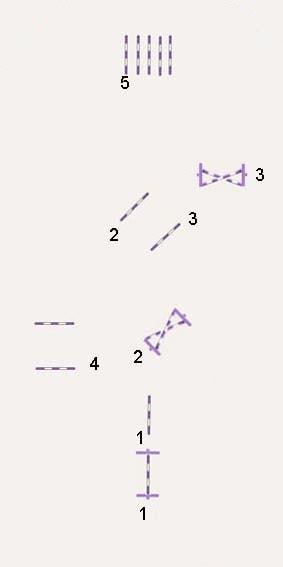

Website vergroten/verkleinen: cltr-knop + scrollen
Problemen met springen
Je paard weigert voor de sprong.
| Inleiding | |
|
• Voordat je aan een probleem gaat werken sluit je een fysieke oorzaak uit. • Deze pagina is niet bedoeld voor het aanrijden van jonge paarden en hun specefieke problemen. Wanneer je gaat werken aan de oplossing van jouw probleem moet je zelf geloven in wat je gaat doen. Het heeft geen zin om "iets te gaan proberen". Je gaat het niet proberen, je gaat het doen! Wees vooral zeer consequent in wat je vraagt! Een paard is van nature geen springer dus het moet hem geleerd worden. Jonge paarden leren springen moet met veel rust en vertrouwen gebeuren. Een slechte ervaring in deze fase vormt een blijvende vervelende herinnering voor het paard. In de ideale wereld springt een paard gewillig alle hindernissen, maar de realiteit is heel anders. De meeste paarden ontwikkelen allerlei trucks om het springen te vermijden. Er zijn paarden met een natuurtalent voor het springen en zij die zo,n paard bezitten zijn gezegend. De hier geboden oplossingen zijn zeer algemeen en meestal op alle paarden van toepassing. Iedere trainer heeft waarschijnlijk zijn eigen techniek om dit probleem op te lossen, en ieder paard is een individu en zal soms anders of niet reageren op een speciale techniek. Maak niet de fout om in de eindeloze spiraal van spanning te raken. Blijf altijd rustig en blijf de problemen benaderen met een positieve instelling en oplossend denken. |
|
terug naar boven
| Verschillende manieren van weigeren | ||
|
1. Sliding stop Je paard gaat met de oortjes vooruit in goed tempo naar de hindernis. Zodra hij vlak voor de hindernis is, zet hij de hakken in het zand en glijdt eventueel de hele hindernis ondersteboven. De ruiter vliegt makkelijk over de nek heen om in de hindernis te landen. Het begin van deze weigering ligt meestal bij een fout van de ruiter. Hij heeft een aantal malen het paard slecht voor de hindernis geplaatst waardoor het paard zichzelf en zijn ruiter redt door de hindernis niet te springen. Het kan uiteindelijk een slechte gewoonte worden van het paard. Hij wacht op een moment van aarzeling van de ruiter om direkt wederom zijn hakken in het zand te zetten. 2. Daar ga ik echt niet heen! Komt het eerste paard nog bij de hindernis, dit paard weigert voorwaarts te gaan zodra hij om de hoek is en weet waar hij naartoe moet. Hij blaast, snurkt, heeft wijdopen ogen, wijdopen rode neusgaten en een nek als een giraffe. Zijn staart verraadt spanning en soms gaat hij steigeren op de vragende kuit van de ruiter. Het kan zijn dat een groen paard deze manier van weigeren ontwikkelt als hij overvraagd wordt. Oudere paarden kunnen met dit gedrag een onervaren ruiter intimideren. 3. Langzaam aan Het paard wordt steeds langzamer, aarzelt en weigert uiteindelijk. 4. Uitbreken Het paard loopt simpel door de schouder heen langs de hindernis. Meestal aan dezelfde kant. 5. Hoofd naar beneden en langs de hindernis Dit paard benadert enthousiast de sprong om op het laatste moment zijn hoofd en schouders naar beneden te gooien, naar links of rechts te springen en eventueel hard weg te rennen, vooral wanneer hij straf verwacht. |
||
|
geen impuls ruiter kijkt naar beneden |
geen overwicht geen contrôle |
te hoog geen grondbalk |
|
sliding-stop |
afzet te dicht |
onzekere ruiter |
terug naar boven
| Mogelijk oorzaken | |
|
Onderzoek eerst mogelijke oorzaken van fysieke aard, zoals pijn of rugproblemen. Deze worden op deze pagina niet behandeld. • Verlies van vertrouwen o.a. veroorzaakt door je paard te overvragen • Een voor het paard onbekende en niet vertrouwd ogende hindernis. Verwacht niet dat je paard zomaar b.v.een sloot zal springen zonder dat je dat geoefend hebt. • Heb je zelf nog geen vertrouwen in de oefening? Deze onzekerheid breng je over op je paard. • Je paard heeft niet de juiste afstand voor de afzet voor de sprong. Dit is meestal een ruiterfout. De ruiter is verantwoordelijk voor het juiste plaatsen van het paard voor de hindernis. • Je paard heeft meer impuls nodig als je van de uitgang vandaan springt of bij een soortgenoot vandaan. • Je kijkt naar beneden in plaats van over de hindernis. • Je trekt teveel aan de teugels voor de sprong. • Je paard was nog niet voorbereid op de sprong, je hebt hem te plotseling voor de hindernis gebracht. Vooral de laatste drie galopsprongen mag je niet meer ingrijpen omdat het paard zijn hoofd nodig heeft voor de afzet en de balans. • Het weigeren is een slechte gewoonte geworden. |
terug naar boven
| Mogelijk oplossingen | |
|
• Rijd je paard goed aan de kuit door veel en snel achter elkaar overgangen te rijden. Geef eventueel een tikje met de zweep als je paard niet snel genog reageert. • Bouw je hindernissen vooral niet te hoog. • Spring vaak en veel voor het paard vertrouwde hindernissen. • Rijd de hindernissen aan met meer "Schwung", zonder te versnellen. • Fixeer je blik goed op een punt achter de hindernis zodat je iedere aarzeling vroegtijdig waarneemt en kan corrigeren. • Oefen met allerlei mogelijke kleuren en voorwerpen bij of onder de hindernis. Oefen ook alle voorkomende soorten hindernissen. • Als het zelfvertrouwen van het paard verloren is gegaan, doe dan een stapje terug in je training en bied je paard oefeningen ann die hij goed beheerst. Sommige paarden hebben een langere periode nodig voor een bepaalde oefening om zelfvertrouwen te krijgen • Als je paard toch niet het vertrouwen heeft in de oefening, laat een ander paard dan eens voorgaan. • Ontwikkel het "goede oog voor de afstand" voor zowel jezelf als het paard door veel te springen over niet al te hoge hindernissen Van en naar de stal Laat je paard van en naar de stal altijd over iets heenstappen, of een klein sprongetje maken. Begin door hem vlak langs een balkje te laten lopen, dan eroverheen, dan iets van de grond en vervolgens allerlei vreemde voorwerpen. Doe dit met beleid, zeker wanneer je je paard aan de hand hebt. Neem een longeerlijn, op de juiste wijze opgestoken, zodat je de lijn kunt vieren wanneer je paard een onverwachte sprong maakt. Scherm de omgeving dusdanig af dat je paard alleen maar over de sprong zijn weg kan vervolgen. Neem de tijd! Vrij springen Het is goed voor het zelfvertrouwen van je paard om hem te leren vrij te springen. (springen zonder ruiter). Zie: Vrij springen |
|
|
Adviezen Een paard dat merkt dat hij net zo goed niet of langs de sprong kan als erover, zal dat zeker gaan doen. Eenmaal dit truckje geleerd, is het moeilijk om het weer af te leren. Het vraagt een doordachte opbouw van een training waarbij je bijna opnieuw begint met leren springen. Wanneer je je paard "heropgevoed" hebt, blijft dit probleem op onverwachte momenten de kop opsteken waardoor herhaling van de basis van de training essentieel is. Als je een hindernis in draf aanrijdt, ga de laatste paar meters dan doorzitten. Je kunt de bewegingen van je paard dan beter controleren en corrigeren. Maak er een gewoonte van om altijd een eenvoudige hindernis in de bak te zetten, ook als je dressuur rijdt of longeert. Geef het sprongetje eventueel een aanleuning. Spring of stap over de hindernis richting de uitgang en verlaat direkt de bak als je paard over de sprong geweest is. Absoluut niet nog een keer de sprong herhalen als je paard het goed gedaan heeft. Bedenk bij iedere training wat je doel is. Is je doel bereikt, stop dan je training (wel uitrijden!). Het stoppen van de training of het verlaten van de bak is de beste beloning. Een positieve herinnering is de basis voor een succes in de volgende training. Laat je niet verleiden om nog een keer en nog een keer en nog een keer te springen, dat is vragen om een weigering. Bekijk je eigen zithouding eens kritisch. Zit je in balans? Heb je een juiste aanleuning? Zit je niet voorover in de aanloop naar de sprong en kijk je over de hindernis in plaats van je te fixeren op de hindernis? Kijk je goed naar de volgende hindernis? Is je zithouding rustig en probeer je niet met veel beweging in je lichaam, handen of benen je paard naar de hindernis te dwingen? Liggen je benen stil en rustig aan het paard, drijf je met je kuiten en klem je niet met je bovenbenen? Wat te vooral niet doen Je paard overmatig straffen voor de weigering. Hij zal het slaan van de zweep onthouden en gaan associëren met de oefening. Je paard weigert dan niet uit angst voor de oefening maar uit angst voor de zweep. |
terug naar boven
| Oefening1 | |
  aanleunen |
Opbouw • Plaats hindernissen zoals aangegeven. Afhankelijk van je niveau, een laag kruisje, een steilsprong of misschien de balkjes gewoon op de grond. Maak de hindernissen vooral niet te hoog! Laat een helper regelmatig de hindernissen veranderen. De aanleuning blijft. • Leg balkjes op de grond op een afstand van 1.20 - 1.50 m.(E-pony - paard). De laatste balk ligt ongeveer 2.00 - 2.75 m. voor de sprong. • Alle hindernissen aanleunen. Doel • niet uitbreken • niet weigeren • relaxed naar een sprong Uitvoering • Rijd dressuur en neem af en toe tussendoor een hindernisje. • Rijd voor en na de sprong vaak, maar niet altijd, een correcte volte om bewust te leren sturen. • Rijd vooral de lijnen tussen de hindernis heel precies. Rijd de lijn overnieuw als het niet gelukt is. • Zorg voor de juiste stelling in de bochten en de voltes. • Gooi de teugels niet los als je de drafbalkjes rijdt maar houd een goed contact zonder te trekken. • Houd evenveel druk op beide teugels, ook in de wending. • Weet van te voren welke volgorde je de hindernissen gaat springen om bewust je lijn te sturen. • Geef een klein tikje met de zweep om je paard attent te maken wanneer je merkt dat hij aarzelt of dreigt uit te breken. Wanneer je paard altijd naar links uitbreekt, neem je je zweep in de linkerhand. Er zijn nog veel meer mogelijkheden om de volgorde van de hindernissen te rijden. Bedenk zelf ook eens een lijntje. |
|
Let op: • Kijk ik goed over de sprong? • Kom ik op tijd rustig terug in het zadel zonder terug te vallen? • Kom ik goed mee boven de hindernis en trek ik mijn paard niet in de mond? • Houd ik mijn paard goed "gevangen" tussen mijn teugels en benen zonder te trekken en te schoppen? • Blijf ik goed achter in het zadel zitten en leun ik niet, ver voor de sprong, voorover? |
|
terug naar boven
| Oefening2 | |
|
 |
Let op! De hindernisnummers zijn geen springvolgorde maar een aanduiding. Opbouw • Bouw alles op als aangegeven. Houd voor ieder sprongetje een ruimte om minstens 7 meter recht aan te kunnen rijden. • Maak van iedere hindernis desnoods een balkje op de grond. • De drafbalkjes liggen 1.20 - 1.50 m. (D/E-pony - paard)van elkaar. • De galopbalkjes liggen 2.10 - 2.75 m. (D/E-pony - paard) van elkaar. Over de galopbalkjes kan ook gedraafd worden. • Zorg dat de hindernissen van beide kanten gesprongen kunnen worden door aan beide kanten een grondbalk voor de hindernis te leggen en aan te leunen. Doel • Rustig en bewust sturen. • Het paard laten wachten op wat jij gaat doen. • Een dergelijk parcoursje gaan zien als een ontspannen spelletje . |
|
Uitvoering • Iedere sprong kun je aanrijden of de ernaast gelegen balkjes. Wissel dat fantasievol af. • Rijd dressuur in combinatie met de obstakels. Rijd misschien alles eerst in stap. • Zorg voor veel afwisseling. • Neem de tijd om naar een obstakel te sturen. Neem eventueel je paard terug in stap en ga vlak voor de hindernis pas aandraven. • Als je draaft, ga dan een paar meter voor de sprong doorzitten. • Ga eens halthouden tussen de balkjes of voor/na een hindernis of rijd een schijnovergang . • Zorg dat je paard pas weet wat jij precies gaat doen ongeveer 7 meter voor een obstakel. Let op: • Rijd ik ieder obstakel geconcentreerd en netjes over het midden? • Heb ik evenveel druk op beide teugels? Ook en vooral in de wendingen? • Rijd ik vloeiende wendingen, trek ik het paard niet plotseling om aan de teugel? • Breng ik voldoende afwisseling in mijn lijntjes zodat mijn paard niet weeet wat ik ga doen? • Stuur ik mijn paard bewust en rustig naar het volgende obstakel? • Kijk ik bij het ene obstakel al naar het volgende obstakel? |
|
terug naar boven
| Oefening3 | |
|
Wanneer de voorgaande oefeningen niet helpen het volgende: • Bouw regelmatig een, voor het paard vertrouwde hindernis op en geef hem aanleuning. Plaats de hindernis richting de uitgang. • Benader de hindernis in stap, ga een paar meter voor de hindernis draven en spring de hindernis. • Zodra je paard de hindernis gesprongen heeft, verlaat je de trainingsruimte. • Als een sprong nog teveel gevraagd is, leg dan een balk op de grond, stap af en leid je paard over de balk. Verlaat dan de trainingsruimte. Ga deze oefening langzaam uitbreiden met meer aangeleunde hindernissen. Ga eerst uitgebreid inrijden en spring in over een hindernisje. Spring dan je twee of drie hindernissen en verlaat direkt de trainingsruimte wanneer je paard ze op de juiste manier gesprongen heeft. Weet wat je doel is en wees consequent. Al moet je de balkjes op de grond leggen, je verlaat de bak pas als hij alle hindernisjes in één keer gesprongen of gestapt heeft. Al duurt het de hele dag! Blijf rustig! |
|
terug naar boven
| Springoefeningen in zakformaat | |

|
Wil je verschillende springoefeningen en enkele parcoursschetsen in een handig boekje? Een leuk geschenk voor jezelf, je vriend(in) of familielid. Lees meer ............ |
| Dressuuroefeningen in zakformaat | |

|
Wil je verschillende dressuuroefeningen in een handig boekje? Een leuk geschenk voor jezelf, je vriend(in) of familielid. Lees meer ............ |
terug naar boven